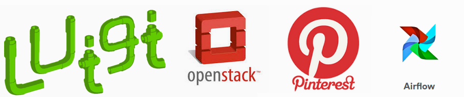
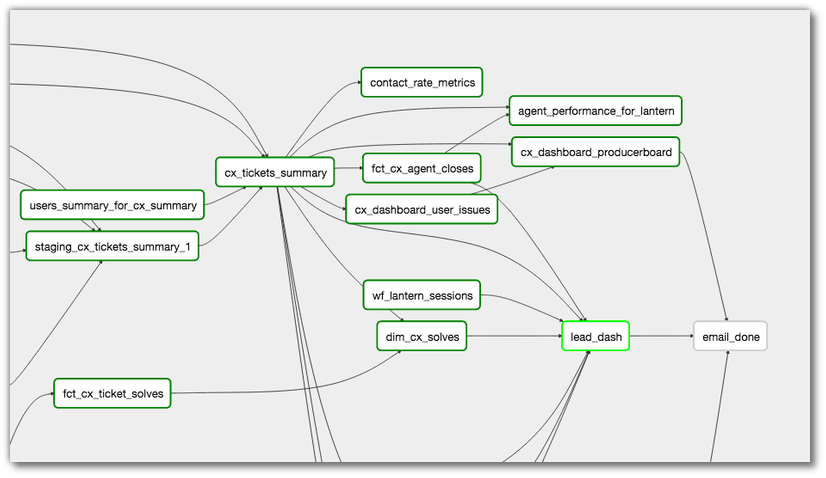
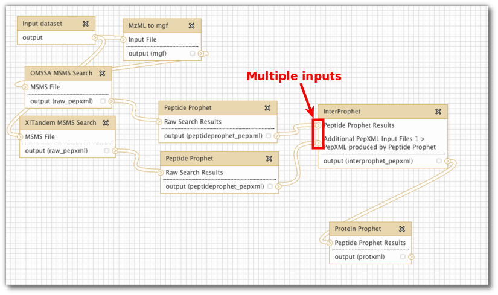

Upsurge in workflow tools

There seem to be a little upsurge in light-weight - often python-based - workflow tools for data pipelines in the last couple of years: Spotify’s Luigi , OpenStack’s Mistral , Pinterest’s Pinball , and recently AirBnb’s Airflow , to name a few. These are all interesting tools, and it is an interesting trend for us at pharmbio , who try to see how we can use workflow tools to automate bio- and cheminformatics tasks on compute clusters.Something missing …
Something I consistently see among the tools though, and which surprises me quite some, is this: Most of these tools specify dependencies between tasks, rather than between the outputs and inputs of these tasks.
As far as I have understood the code examples and screenshots, this is the case for almost all these tools. In the case of Luigi though, at least it was extensible enough that it was very easy to add a small workaround to allow dependency definition between these instead of tasks (we’re in the process of packaging this up in the sciluigi library ).
Maybe this has something to do with the nature of typical hadoop workflows, which seem to be the primary goal of most of these tools. But it is still unfortunate that this subtle design decision highly limits the applicability of these tools in such a big domain as scientific workflows.
Let’s look at an example
Let’s for example compare one of these tools with another very common platform in bioinformatics, which ships with workflow support built-in: the Galaxy platform . Let’s compare for example how Airflow defines dependencies directly between tasks, and how Galaxy properly defines connections between inputs and outputs, by looking at the graphical representation of the workflows.

Airflow dependency graph (Image from the AirFlow docs )

Galaxy “dependency graph”, or “data flow network” (Screenshot creds: Björn Grüning )
Do you see how the explicitly named inputs and outputs in the Galaxy example makes this workflow so much clearer.
Now, these are of course only graphs, and might not tell the full truth about how the tool works, but you just have to look at a few code examples, to see that this really is the case. For example, for AirFlow, you can find an example of setting up dependencies here . Or, see below:
# ... code for instantiating tasks t1 and t2 ...
t2.set_upstream(t1)
# This means that t2 will depend on t1
# running successfully to run
Do you see how you set the dependencies directly between the tasks (t1 and t2), without any info about inputs and outputs?
In the case of Galaxy, you don’t define this in code, but you can draw the connections between named outports and inports graphically.
And, for an example of a library that allows to do this in code, see for example our little helper library for luigi, sciluigi, that allows this:
# Run the same task on the two splits
t1 = Task1()
t2 = Task1()
t3 = Task2(
in1 = t1.outspec('out1')
in2 = t1.outspec('out2')
in3 = t2.outspec('out1')
in4 = t2.outspec('out2'))
Do you see how this enables us to receive multiple outputs (out1, out2) from multiple upstream tasks (t1, t2), into task t3 in a very clear and explicit way?
An example from the real world
If you still don’t believe that this is important, have a look at this example workflow from a real world bioinformatics (Next Generation Sequencing) workflow, given in a course at SciLifeLab here in Uppsala/Stockholm (implemented in a predecessor to our sciluigi library, luigi’s monkey wrench ). Look especially for all the “inports” and “outport” parts in the code:
import luigi
from luigis_monkey_wrench import *
REF='human_17_v37.fasta'
INDIVIDUALS=['NA06984','NA07000']
SAMPLES=['1','2']
BASENAME='.ILLUMINA.low_coverage.17q_'
PICARDDIR='/sw/apps/bioinfo/picard/1.69/kalkyl/'
KNOWNSITES='/proj/labs/gatk/ALL.chr17.phase1_integrated_calls.snps_indels_svs.genotypes.vcf'
class GATKWorkflow(WorkflowTask):
def requires(self):
for i in INDIVIDUALS:
# Workflow definition
# ---------------------------------------------------------------------------------
# files() will return a pseudo task that just outputs an existing file,
# while not running anything.
# shell() will create a new task with a command that can take inputs
# and outputs.
fq1 = file('fastq:{i}/{i}{b}1.fq'.format(i=i,b=BASENAME))
fq2 = file('fastq:{i}/{i}{b}2.fq'.format(i=i,b=BASENAME))
# Step 2 in [1]--------------------------------------------------------------------
aln1 = shell('bwa aln {ref} <i:fastq> > <o:sai:<i:fastq>.sai>'.format(ref=REF))
aln1.inports['fastq'] = fq1.outport('fastq')
aln2 = shell('bwa aln {ref} <i:fastq> > <o:sai:<i:fastq>.sai>'.format(ref=REF))
aln2.inports['fastq'] = fq2.outport('fastq')
# Step 3 in [1]--------------------------------------------------------------------
merg = shell(('bwa sampe {ref} <i:sai1> <i:sai2> <i:fq1> <i:fq2> '
'> <o:merged:{i}/{i}{b}.merged.sam>').format(
ref=REF,
i=i,
b=BASENAME))
merg.inports['sai1'] = aln1.outport('sai')
merg.inports['sai2'] = aln2.outport('sai')
merg.inports['fq1'] = fq1.outport('fastq')
merg.inports['fq2'] = fq2.outport('fastq')
# Step 4a in [1]------------------------------------------------------------------
mergbam = shell('''
java -Xmx2g -jar {p}/AddOrReplaceReadGroups.jar
INPUT=<i:sam>
OUTPUT=<o:bam:<i:sam>.bam>
SORT_ORDER=coordinate
RGID={sample}-id
RGLB={sample}-lib
RGPL=ILLUMINA
RGPU={sample}-01
RGSM={sample}
'''.format(
p=PICARDDIR,
sample=i))
mergbam.inports['sam'] = merg.outport('merged')
# Step 4b in [1] -----------------------------------------------------------------
index_mergbam = shell('''
java -Xmx2g -jar
/sw/apps/bioinfo/picard/1.69/kalkyl/BuildBamIndex.jar
INPUT=<i:bamr
# <o:bai:<i:bam:.bam|.bai>>
''')
index_mergbam.inports['bam'] = mergbam.outport('bam')
# Step 5a in [1]------------------------------------------------------------------
local_realign = shell('''
java -Xmx2g -jar /sw/apps/bioinfo/GATK/1.5.21/GenomeAnalysisTK.jar
-I <i:bam>
-R {ref}
-T RealignerTargetCreator
-o <o:intervals:<i:bam>.intervals>
'''.format(
ref=REF))
local_realign.inports['bam'] = mergbam.outport('bam')
# Step 5b in [1]-----------------------------------------------------------------
actual_realign = shell('''
java -Xmx2g -jar /sw/apps/bioinfo/GATK/1.5.21/GenomeAnalysisTK.jar
-I <i:bam>
-R {ref}
-T IndelRealigner
-o <o:realigned_bam:<i:intervals>.realign.bam>
-targetIntervals <i:intervals>
# <o:realigned_bai:<i:intervals>.realign.bai>
'''.format(
ref=REF))
actual_realign.inports['bam'] = mergbam.outport('bam')
actual_realign.inports['intervals'] = local_realign.outport('intervals')
# Step 5c in [1]-----------------------------------------------------------------
mark_dupes = shell('''
java -Xmx2g -jar /sw/apps/bioinfo/picard/1.69/kalkyl/MarkDuplicates.jar '
INPUT=<i:bam> '
OUTPUT=<o:marked_bam:<i:bam>.marked.bam> '
METRICS_FILE=<o:metrics:<i:bam>.marked.metrics>
''')
mark_dupes.inports['bam'] = actual_realign.outport('realigned_bam')
# Step 5d in [1], Index bam (picard does not do that automatically)---------------
index_marked_bam = shell(('java -Xmx2g -jar '
'/sw/apps/bioinfo/picard/1.69/kalkyl/BuildBamIndex.jar '
'INPUT=<i:bam> '
'# <o:bai:<i:bam:.bam|.bai>>'))
index_marked_bam.inports['bam'] = mark_dupes.outport('marked_bam')
# Step 5e in [1], quality recalibration with GATK---------------------------------
count_covar = shell('''
java -Xmx2g -jar /sw/apps/bioinfo/GATK/1.5.21/GenomeAnalysisTK.jar
-T CountCovariates -I <i:bam>
-R {ref}
-knownSites {sites}
-cov ReadGroupCovariate
-cov CycleCovariate
-cov DinucCovariate
-cov QualityScoreCovariate
-recalFile <o:covariate:<i:bam>.covar>
'''.format(
ref=REF,
sites=KNOWNSITES))
count_covar.inports['bam'] = mark_dupes.outport('marked_bam')
# Step 5f in [1]-----------------------------------------------------------------
table_recalib = shell('''
java -Xmx2g -jar /sw/apps/bioinfo/GATK/1.5.21/GenomeAnalysisTK.jar
-T TableRecalibration
-I <i:bam>
-R {ref}
-recalFile <i:calib>
-o <o:calibrated_bam:<i:calib>.bam>
'''.format(ref=REF))
table_recalib.inports['bam'] = mark_dupes.outport('marked_bam')
table_recalib.inports['calib'] = count_covar.outport('covariate')
yield table_recalib
if __name__ == '__main__':
luigi.run()
I think in this example it becomes clear that the actual data flow in the system, is much more intricate than just the dependencies between tasks, and that the latter, tasks dependencies only, don’t naturally capture the detail of the problem in practice. Thus, to get the proper level of control, we need to be able to define the data flow in the system, from input/inport of one task, to output/outport of another. The task dependencies can easily be computed by the dataflow wiring anyway!
Take home message
So, please, tool makers, remember:
- Tasks need to support multiple, explicitly named inputs and outputs (“in-ports” and “out-ports” in Flow-based programming lingo).
- The dependency graph definition should define connections between inputs and outputs, not between tasks.
So again, in summary: Let’s focus more on [allowing to define] the data flow in the system, than the dependencies between tasks.